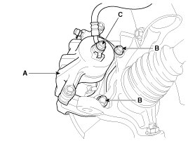
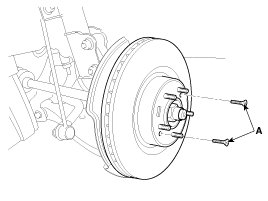
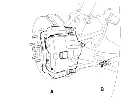
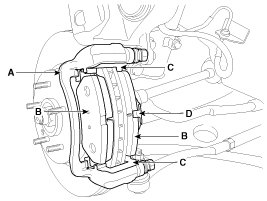
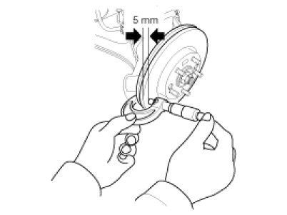
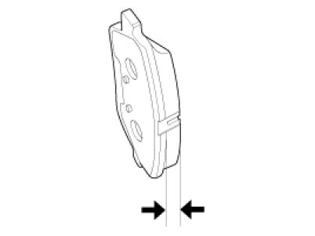
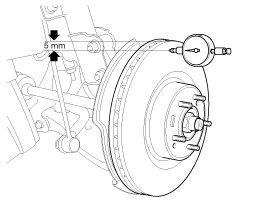
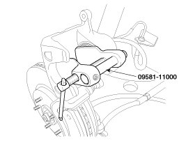

Repair Procedures
Removal
1. Remove the front wheel & tire.
Tightening torque:
88.3 - 107.9 N.m (9.0 - 11.0 kgf.m, 65.1 - 79.6 lb-ft)
2. Loosen the hose eyebolt (C) and caliper mounting bolts (B), then remove the front caliper assembly (A).
Tightening torque:
Brake hose to caliper (C):
24.5 - 29.4 N.m (2.5 - 3.0 kgf.m, 18.1 - 21.7 lb-ft)
Caliper assembly to knuckle (B):
78.5 - 98.1 N.m (8.0 - 10.0 kgf.m, 57.9 - 72.3 lb-ft)

3. Remove the front brake disc by loosening the screws (A).

Replacement
Front brake pads
1. Loosen the guide rod bolt (B) and pivot the caliper (A) up out of the way.
Tightening torque:
21.6 - 31.4 N.m (2.2 - 3.2 kgf.m, 15.9 - 23.1 lb-ft)

2. Replace pad shim (D), pad retainers (C) and brake pads (B) in the caliper carrier (A).

Inspection
Front brake disc thickness check
1. Check the brake pads for wear and fade.
2. Check the brake disc for damage and cracks.
3. Remove all rust and contamination from the surface, and measure the disc thickness at 8 points, at least, of same distance (5mm) from the brake disc outer circle.
Front brake disc thickness
- Standard : 23 mm (0.91 in)
- Service Limit : 21.4 mm (0.84 in)
Deviation: Less than 0.005 mm (0.0002 in)

4. If wear exceeds the limit, replace the discs and pad assembly left and right of the vehicle.
Front Brake Pad Check
1. Check the pad wear. Measure the pad thickness and replace it, if it is less than the specified value.
Pad thickness
Standard value: 11 mm (0.43 in)
Service limit: 2.0 mm (0.0787 in)
2. Check that grease is applied, to sliding contact points and the pad and backing metal for damage.

Front brake disc runout check
1. Place a dial gauge about 5mm (0.2 in.) from the outer circumference of the brake disc, and measure the runout of the disc.
Brake disc runout
Limit: 0.04 mm (0.0016 in.) or less (new one)

2. If the runout of the brake disc exceeds the limit specification, replace the disc, and then measure the runout again.
3. If the runout does not exceed the limit specification, install the brake disc after turning it 180° and then check the runout of the brake disc again.
4. If the runout cannot be corrected by changing the position of the brake disc, replace the brake disc.
Installation
1. Installation is the reverse of removal.
2. Use a SST (09581-11000) when installing the brake caliper assembly.

3. After installation, bleed the brake system.
CAUTION:
- Do not hit piston end by hammer or prying directly against piston face with screwdriver to push in piston.
- Using wood or used pad to protect piston end and pushing the wood or pad is recommended.
- When spreading a piston, SST should be cover all area of piston end face.